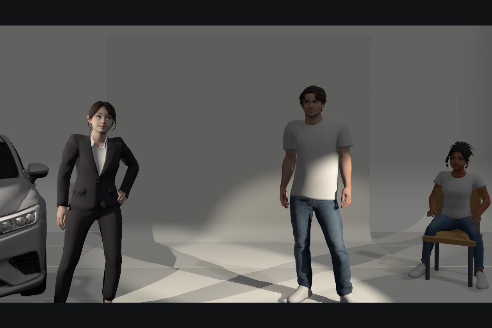
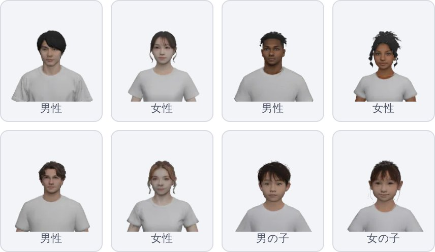

スタジオの広さと立ち位置とレンズの画角を、
撮影の前にブラウザで確かめられます。
Studio Planner は、撮影の準備と打合せのための 3D の道具です。スタジオの寸法を打ち込んで人や機材を置くと、カメラに何が写るかがその場で分かります。登録もインストールも要りません。できた配置は A4 の用紙に印刷したり、リンクにして送ったりできます。
スタジオを作って、入るかどうかを見る
幅と奥行と高さを打ち込むと、ホリゾント付きのスタジオができます。そこに置いたものはすべて実寸で描かれるので、車が入るか、カメラはどこまで引けるか、ライトの場所は残るかが上面の図面ですぐに分かります。
寸法は図面の上に自動で描かれます。スタジオや背景布は角をつまんで大きさを変えられ、数字もそれに合わせて変わります。

カメラの目で見る
センサーのフォーマットと焦点距離を選ぶと、ファインダーにその画角がそのまま出ます。カメラを動かしたり、上下に振ったり、高さを変えたりすると、絵もそれに合わせて変わります。鏡には実際にそこにあるものが映り、背景布はカメラから見える範囲で切れます。
カメラは 1 つの図面に何台でも置けて、切り替えて見られます。ファインダーの絵は、そのまま印刷用の用紙に載ります。

人物を置いて、ポーズを付ける
人物は大人と子どもを合わせて 14 体あり、身長と服装を変えられます。ポーズは立つ・座る・寝るなど 11 種類で、指まで動きます。椅子や箱馬の上に置けば、そこに座ります。
用意したポーズに無い姿勢は、写真を撮って指定できます。写した姿勢がそのまま画面の人物に乗ります。写真は端末の中で読むだけで、どこにも送られません。

ライトと小道具
ライトは 5 つの型があり、スタンド・ブーム・床置きのどれかで置けます。向きと広がりと色を決めると、図面には記号として、3D の画面には光と影として描かれます。誰かが吊る前に、どこに光が当たるかを見ておけます。
車、椅子、テーブル、箱馬、イントレ、カポック、鏡、ディスプレイが最初から入っています。手持ちの GLB や FBX のモデルも取り込めて、大きさはファイルから読み取ります。

ロケ地のスキャンの中で組む
ロケ地を 3D ガウシアンスプラットでスキャンしてあれば、そのファイルを取り込めます。実寸で入るので、スタジオと同じように中に人や車やカメラを置けます。共有リンクに入るのは置き方だけで、スキャンそのものは端末に残ります。
1 つの図面に、複数のカット
カットごとにカメラと立ち位置を持てて、タップで切り替えられます。用紙はカット単位で出るので、5 カットの日なら 1 つのファイルから 5 枚が出ます。
用紙とリンクと QR で配る
A4 の用紙 1 枚に、上面図と側面図とファインダーの絵と寸法が入ります。印刷はブラウザから行うので、追加のソフトは要りません。上面図と側面図は用紙の中で好きに構図を直せますが、ファインダーだけは固定してあります。印刷した絵とカメラが撮る画角がずれないようにするためです。
共有リンクには配置がまるごと入っているので、開いた人のスマホに同じ配置が出ます。リンクは QR コードにもできるので、用紙やスタジオの壁に貼っておけます。

ポケットのスマホで動きます
Studio Planner は Web ページなので、スマホでもタブレットでも PC でも、Safari や Chrome で開くだけで使えます。ホーム画面に追加するとアプリのように開き、一度開いた端末なら電波の無い場所でも動きます。
操作は指を前提にしてあります。つまんで拡大し、引いて動かし、長押しでメニューが出ます。設定のパネルは畳めるので、図面に画面をいっぱいに使えます。

料金とデータの扱い
Studio Planner は無料で、コードは MIT ライセンスで公開しています。アカウントは無く、図面を預かるサーバーもありません。作ったものはブラウザの中と、送ったリンクの中にだけあります。ポーズ用の写真や取り込んだ 3D ファイルも端末の外には出ません。
計っているのは訪問数だけで、Cookie は使っていません。
よくある質問
対応しているカメラは何ですか
どのカメラでも使えます。機種名のリストは持たず、センサーのフォーマット（フルサイズ、Super 35、マイクロフォーサーズなど）を選んで焦点距離を打ち込みます。フォーマットは何十年も変わっていないので、古くなることがありません。
図面はどこに保存されますか
使った端末のブラウザの中と、共有リンクの中です。リンクを残しておけば図面も残ります。ファイルとして保存することもできます。
自分のスタジオを入れられますか
入れられます。寸法を打ち込むか、スタジオの 3D モデルを取り込むか、スマホで撮ったガウシアンスプラットのスキャンを置くかです。
光量は計算できますか
できません。ライトが持っているのは位置と向きと広がりで、打合せの図面に要るのはそこまでだと考えています。照明のシミュレーターではありません。
英語で使えますか
使えます。ブラウザの言語に合わせて切り替わり、アドレスに ?eng を付けると英語に固定できます。
ブラウザで動くので、開いてみるのがいちばん早いです。
使ってみる — 無料